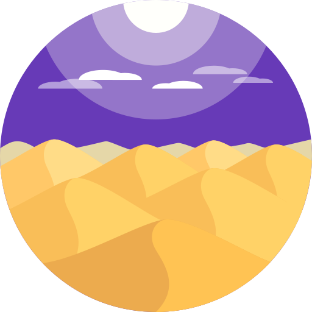

<mat-toolbar color="primary" [ngClass]="{toolbar: heroSection}">
<!--  <div class="layer"></div>-->
  <mat-toolbar-row class="nav-row mat-elevation-z6" style="z-index: 1">
    
    Revive
  </mat-toolbar-row>
  <mat-toolbar-row class="hero-section" *ngIf="heroSection">
    <h1 class="">INTERACTIVE COLORIZATION</h1>
    <p>Manually edit the auto colorized photos in a easy and super accurate way</p>
  </mat-toolbar-row>
</mat-toolbar>
